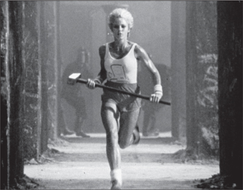

THE LAUNCH
A Dent in the Universe

The "1984" ad
The high point of the October 1983 Apple sales conference in Hawaii was a skit based on a TV show called The Dating Game. Jobs played emcee, and his three contestants, whom he had convinced to fly to Hawaii, were Bill Gates and two other software executives, Mitch Kapor and Fred Gibbons. As the show's jingly theme song played, the three took their stools. Gates, looking like a high school sophomore, got wild applause from the 750 Apple salesmen when he said, "During 1984, Microsoft expects to get half of its revenues from software for the Macintosh." Jobs, clean-shaven and bouncy, gave a toothy smile and asked if he thought that the Macintosh's new operating system would become one of the industry's new standards. Gates answered, "To create a new standard takes not just making something that's a little bit different, it takes something that's really new and captures people's imagination. And the Macintosh, of all the machines I've ever seen, is the only one that meets that standard."
But even as Gates was speaking, Microsoft was edging away from being primarily a collaborator with Apple to being more of a competitor. It would continue to make application software, like Microsoft Word, for Apple, but a rapidly increasing share of its revenue would come from the operating system it had written for the IBM personal computer. The year before, 279,000 Apple IIs were sold, compared to 240,000 IBM PCs and its clones. But the figures for 1983 were coming in starkly different: 420,000 Apple IIs versus 1.3 million IBMs and its clones. And both the Apple III and the Lisa were dead in the water.
Just when the Apple sales force was arriving in Hawaii, this shift was hammered home on the cover of Business Week. Its headline: "Personal Computers: And the Winner Is ... IBM." The story inside detailed the rise of the IBM PC. "The battle for market supremacy is already over," the magazine declared. "In a stunning blitz, IBM has taken more than 26% of the market in two years, and is expected to account for half the world market by 1985. An additional 25% of the market will be turning out IBM-compatible machines."
That put all the more pressure on the Macintosh, due out in January 1984, three months away, to save the day against IBM. At the sales conference Jobs decided to play the showdown to the hilt. He took the stage and chronicled all the missteps made by IBM since 1958, and then in ominous tones described how it was now trying to take over the market for personal computers: "Will Big Blue dominate the entire computer industry? The entire information age? Was George Orwell right about 1984?" At that moment a screen came down from the ceiling and showed a preview of an upcoming sixty-second television ad for the Macintosh. In a few months it was destined to make advertising history, but in the meantime it served its purpose of rallying Apple's demoralized sales force. Jobs had always been able to draw energy by imagining himself as a rebel pitted against the forces of darkness. Now he was able to energize his troops with the same vision.
There was one more hurdle: Hertzfeld and the other wizards had to finish writing the code for the Macintosh. It was due to start shipping on Monday, January 16. One week before that, the engineers concluded they could not make that deadline.
Jobs was at the Grand Hyatt in Manhattan, preparing for the press previews, so a Sunday morning conference call was scheduled. The software manager calmly explained the situation to Jobs, while Hertzfeld and the others huddled around the speakerphone holding their breath. All they needed was an extra two weeks. The initial shipments to the dealers could have a version of the software labeled "demo," and these could be replaced as soon as the new code was finished at the end of the month. There was a pause. Jobs did not get angry; instead he spoke in cold, somber tones. He told them they were really great. So great, in fact, that he knew they could get this done. "There's no way we're slipping!" he declared. There was a collective gasp in the Bandley building work space. "You guys have been working on this stuff for months now, another couple weeks isn't going to make that much of a difference. You may as well get it over with. I'm going to ship the code a week from Monday, with your names on it."
"Well, we've got to finish it," Steve Capps said. And so they did. Once again, Jobs's reality distortion field pushed them to do what they had thought impossible. On Friday Randy Wigginton brought in a huge bag of chocolate-covered espresso beans for the final three all-nighters. When Jobs arrived at work at 8:30 a.m. that Monday, he found Hertzfeld sprawled nearly comatose on the couch. They talked for a few minutes about a remaining tiny glitch, and Jobs decreed that it wasn't a problem. Hertzfeld dragged himself to his blue Volkswagen Rabbit (license plate: MACWIZ) and drove home to bed. A short while later Apple's Fremont factory began to roll out boxes emblazoned with the colorful line drawings of the Macintosh. Real artists ship, Jobs had declared, and now the Macintosh team had.
In the spring of 1983, when Jobs had begun to plan for the Macintosh launch, he asked for a commercial that was as revolutionary and astonishing as the product they had created. "I want something that will stop people in their tracks," he said. "I want a thunderclap." The task fell to the Chiat/Day advertising agency, which had acquired the Apple account when it bought the advertising side of Regis McKenna's business. The person put in charge was a lanky beach bum with a bushy beard, wild hair, goofy grin, and twinkling eyes named Lee Clow, who was the creative director of the agency's office in the Venice Beach section of Los Angeles. Clow was savvy and fun, in a laid-back yet focused way, and he forged a bond with Jobs that would last three decades.
Clow and two of his team, the copywriter Steve Hayden and the art director Brent Thomas, had been toying with a tagline that played off the George Orwell novel: "Why 1984 won't be like 1984." Jobs loved it, and asked them to develop it for the Macintosh launch. So they put together a storyboard for a sixty-second ad that would look like a scene from a sci-fi movie. It featured a rebellious young woman outrunning the Orwellian thought police and throwing a sledgehammer into a screen showing a mind-controlling speech by Big Brother.
The concept captured the zeitgeist of the personal computer revolution. Many young people, especially those in the counterculture, had viewed computers as instruments that could be used by Orwellian governments and giant corporations to sap individuality. But by the end of the 1970s, they were also being seen as potential tools for personal empowerment. The ad cast Macintosh as a warrior for the latter cause—a cool, rebellious, and heroic company that was the only thing standing in the way of the big evil corporation's plan for world domination and total mind control.
Jobs liked that. Indeed the concept for the ad had a special resonance for him. He fancied himself a rebel, and he liked to associate himself with the values of the ragtag band of hackers and pirates he recruited to the Macintosh group. Even though he had left the apple commune in Oregon to start the Apple corporation, he still wanted to be viewed as a denizen of the counterculture rather than the corporate culture.
But he also realized, deep inside, that he had increasingly abandoned the hacker spirit. Some might even accuse him of selling out. When Wozniak held true to the Homebrew ethic by sharing his design for the Apple I for free, it was Jobs who insisted that they sell the boards instead. He was also the one who, despite Wozniak's reluctance, wanted to turn Apple into a corporation and not freely distribute stock options to the friends who had been in the garage with them. Now he was about to launch the Macintosh, a machine that violated many of the principles of the hacker's code: It was overpriced; it would have no slots, which meant that hobbyists could not plug in their own expansion cards or jack into the motherboard to add their own new functions; and it took special tools just to open the plastic case. It was a closed and controlled system, like something designed by Big Brother rather than by a hacker.
So the "1984" ad was a way of reaffirming, to himself and to the world, his desired self-image. The heroine, with a drawing of a Macintosh emblazoned on her pure white tank top, was a renegade out to foil the establishment. By hiring Ridley Scott, fresh off the success of Blade Runner, as the director, Jobs could attach himself and Apple to the cyberpunk ethos of the time. With the ad, Apple could identify itself with the rebels and hackers who thought differently, and Jobs could reclaim his right to identify with them as well.
Sculley was initially skeptical when he saw the storyboards, but Jobs insisted that they needed something revolutionary. He was able to get an unprecedented budget of $750,000 just to film the ad, which they planned to premiere during the Super Bowl. Ridley Scott made it in London using dozens of real skinheads among the enthralled masses listening to Big Brother on the screen. A female discus thrower was chosen to play the heroine. Using a cold industrial setting dominated by metallic gray hues, Scott evoked the dystopian aura of Blade Runner. Just at the moment when Big Brother announces "We shall prevail!" the heroine's hammer smashes the screen and it vaporizes in a flash of light and smoke.
When Jobs previewed the ad for the Apple sales force at the meeting in Hawaii, they were thrilled. So he screened it for the board at its December 1983 meeting. When the lights came back on in the boardroom, everyone was mute. Philip Schlein, the CEO of Macy's California, had his head on the table. Mike Markkula stared silently; at first it seemed he was overwhelmed by the power of the ad. Then he spoke: "Who wants to move to find a new agency?" Sculley recalled, "Most of them thought it was the worst commercial they had ever seen." Sculley himself got cold feet. He asked Chiat/Day to sell off the two commercial spots—one sixty seconds, the other thirty—that they had purchased.
Jobs was beside himself. One evening Wozniak, who had been floating into and out of Apple for the previous two years, wandered into the Macintosh building. Jobs grabbed him and said, "Come over here and look at this." He pulled out a VCR and played the ad. "I was astounded," Woz recalled. "I thought it was the most incredible thing." When Jobs said the board had decided not to run it during the Super Bowl, Wozniak asked what the cost of the time slot was. Jobs told him $800,000. With his usual impulsive goodness, Wozniak immediately offered, "Well, I'll pay half if you will."
He ended up not needing to. The agency was able to sell off the thirty-second time slot, but in an act of passive defiance it didn't sell the longer one. "We told them that we couldn't sell the sixty-second slot, though in truth we didn't try," recalled Lee Clow. Sculley, perhaps to avoid a showdown with either the board or Jobs, decided to let Bill Campbell, the head of marketing, figure out what to do. Campbell, a former football coach, decided to throw the long bomb. "I think we ought to go for it," he told his team.
Early in the third quarter of Super Bowl XVIII, the dominant Raiders scored a touchdown against the Redskins and, instead of an instant replay, television screens across the nation went black for an ominous two full seconds. Then an eerie black-and-white image of drones marching to spooky music began to fill the screen. More than ninety-six million people watched an ad that was unlike any they'd seen before. At its end, as the drones watched in horror the vaporizing of Big Brother, an announcer calmly intoned, "On January 24th, Apple Computer will introduce Macintosh. And you'll see why 1984 won't be like ‘1984.'"
It was a sensation. That evening all three networks and fifty local stations aired news stories about the ad, giving it a viral life unprecedented in the pre–YouTube era. It would eventually be selected by both TV Guide and Advertising Age as the greatest commercial of all time.
Over the years Steve Jobs would become the grand master of product launches. In the case of the Macintosh, the astonishing Ridley Scott ad was just one of the ingredients. Another part of the recipe was media coverage. Jobs found ways to ignite blasts of publicity that were so powerful the frenzy would feed on itself, like a chain reaction. It was a phenomenon that he would be able to replicate whenever there was a big product launch, from the Macintosh in 1984 to the iPad in 2010. Like a conjurer, he could pull the trick off over and over again, even after journalists had seen it happen a dozen times and knew how it was done. Some of the moves he had learned from Regis McKenna, who was a pro at cultivating and stroking prideful reporters. But Jobs had his own intuitive sense of how to stoke the excitement, manipulate the competitive instincts of journalists, and trade exclusive access for lavish treatment.
In December 1983 he took his elfin engineering wizards, Andy Hertzfeld and Burrell Smith, to New York to visit Newsweek to pitch a story on "the kids who created the Mac." After giving a demo of the Macintosh, they were taken upstairs to meet Katharine Graham, the legendary proprietor, who had an insatiable interest in whatever was new. Afterward the magazine sent its technology columnist and a photographer to spend time in Palo Alto with Hertzfeld and Smith. The result was a flattering and smart four-page profile of the two of them, with pictures that made them look like cherubim of a new age. The article quoted Smith saying what he wanted to do next: "I want to build the computer of the 90's. Only I want to do it tomorrow." The article also described the mix of volatility and charisma displayed by his boss: "Jobs sometimes defends his ideas with highly vocal displays of temper that aren't always bluster; rumor has it that he has threatened to fire employees for insisting that his computers should have cursor keys, a feature that Jobs considers obsolete. But when he is on his best behavior, Jobs is a curious blend of charm and impatience, oscillating between shrewd reserve and his favorite expression of enthusiasm: ‘Insanely great.'"
The technology writer Steven Levy, who was then working for Rolling Stone, came to interview Jobs, who urged him to convince the magazine's publisher to put the Macintosh team on the cover of the magazine. "The chances of Jann Wenner agreeing to displace Sting in favor of a bunch of computer nerds were approximately one in a googolplex," Levy thought, correctly. Jobs took Levy to a pizza joint and pressed the case: Rolling Stone was "on the ropes, running crummy articles, looking desperately for new topics and new audiences. The Mac could be its salvation!" Levy pushed back. Rolling Stone was actually good, he said, and he asked Jobs if he had read it recently. Jobs said that he had, an article about MTV that was "a piece of shit." Levy replied that he had written that article. Jobs, to his credit, didn't back away from the assessment. Instead he turned philosophical as he talked about the Macintosh. We are constantly benefiting from advances that went before us and taking things that people before us developed, he said. "It's a wonderful, ecstatic feeling to create something that puts it back in the pool of human experience and knowledge."
Levy's story didn't make it to the cover. But in the future, every major product launch that Jobs was involved in—at NeXT, at Pixar, and years later when he returned to Apple—would end up on the cover of either Time, Newsweek, or Business Week.
On the morning that he and his teammates completed the software for the Macintosh, Andy Hertzfeld had gone home exhausted and expected to stay in bed for at least a day. But that afternoon, after only six hours of sleep, he drove back to the office. He wanted to check in to see if there had been any problems, and most of his colleagues had done the same. They were lounging around, dazed but excited, when Jobs walked in. "Hey, pick yourselves up off the floor, you're not done yet!" he announced. "We need a demo for the intro!" His plan was to dramatically unveil the Macintosh in front of a large audience and have it show off some of its features to the inspirational theme from Chariots of Fire. "It needs to be done by the weekend, to be ready for the rehearsals," he added. They all groaned, Hertzfeld recalled, "but as we talked we realized that it would be fun to cook up something impressive."
The launch event was scheduled for the Apple annual stockholders' meeting on January 24—eight days away—at the Flint Auditorium of De Anza Community College. The television ad and the frenzy of press preview stories were the first two components in what would become the Steve Jobs playbook for making the introduction of a new product seem like an epochal moment in world history. The third component was the public unveiling of the product itself, amid fanfare and flourishes, in front of an audience of adoring faithful mixed with journalists who were primed to be swept up in the excitement.
Hertzfeld pulled off the remarkable feat of writing a music player in two days so that the computer could play the Chariots of Fire theme. But when Jobs heard it, he judged it lousy, so they decided to use a recording instead. At the same time, Jobs was thrilled with a speech generator that turned text into spoken words with a charming electronic accent, and he decided to make it part of the demo. "I want the Macintosh to be the first computer to introduce itself!" he insisted.
At the rehearsal the night before the launch, nothing was working well. Jobs hated the way the animation scrolled across the Macintosh screen, and he kept ordering tweaks. He also was dissatisfied with the stage lighting, and he directed Sculley to move from seat to seat to give his opinion as various adjustments were made. Sculley had never thought much about variations of stage lighting and gave the type of tentative answers a patient might give an eye doctor when asked which lens made the letters clearer. The rehearsals and changes went on for five hours, well into the night. "He was driving people insane, getting mad at the stagehands for every glitch in the presentation," Sculley recalled. "I thought there was no way we were going to get it done for the show the next morning."
Most of all, Jobs fretted about his presentation. Sculley fancied himself a good writer, so he suggested changes in Jobs's script. Jobs recalled being slightly annoyed, but their relationship was still in the phase when he was lathering on flattery and stroking Sculley's ego. "I think of you just like Woz and Markkula," he told Sculley. "You're like one of the founders of the company. They founded the company, but you and I are founding the future." Sculley lapped it up.
The next morning the 2,600-seat auditorium was mobbed. Jobs arrived in a double-breasted blue blazer, a starched white shirt, and a pale green bow tie. "This is the most important moment in my entire life," he told Sculley as they waited backstage for the program to begin. "I'm really nervous. You're probably the only person who knows how I feel about this." Sculley grasped his hand, held it for a moment, and whispered "Good luck."
As chairman of the company, Jobs went onstage first to start the shareholders' meeting. He did so with his own form of an invocation. "I'd like to open the meeting," he said, "with a twenty-year-old poem by Dylan—that's Bob Dylan." He broke into a little smile, then looked down to read from the second verse of "The Times They Are a-Changin'." His voice was high-pitched as he raced through the ten lines, ending with "For the loser now / Will be later to win / For the times they are a-changin'." That song was the anthem that kept the multimillionaire board chairman in touch with his counterculture self-image. He had a bootleg copy of his favorite version, which was from the live concert Dylan performed, with Joan Baez, on Halloween 1964 at Lincoln Center's Philharmonic Hall.
Sculley came onstage to report on the company's earnings, and the audience started to become restless as he droned on. Finally, he ended with a personal note. "The most important thing that has happened to me in the last nine months at Apple has been a chance to develop a friendship with Steve Jobs," he said. "For me, the rapport we have developed means an awful lot."
The lights dimmed as Jobs reappeared onstage and launched into a dramatic version of the battle cry he had delivered at the Hawaii sales conference. "It is 1958," he began. "IBM passes up a chance to buy a young fledgling company that has invented a new technology called xerography. Two years later, Xerox was born, and IBM has been kicking themselves ever since." The crowd laughed. Hertzfeld had heard versions of the speech both in Hawaii and elsewhere, but he was struck by how this time it was pulsing with more passion. After recounting other IBM missteps, Jobs picked up the pace and the emotion as he built toward the present:
It is now 1984. It appears that IBM wants it all. Apple is perceived to be the only hope to offer IBM a run for its money. Dealers, after initially welcoming IBM with open arms, now fear an IBM-dominated and-controlled future and are turning back to Apple as the only force who can ensure their future freedom. IBM wants it all, and is aiming its guns at its last obstacle to industry control, Apple. Will Big Blue dominate the entire computer industry? The entire information age? Was George Orwell right?
As he built to the climax, the audience went from murmuring to applauding to a frenzy of cheering and chanting. But before they could answer the Orwell question, the auditorium went black and the "1984" commercial appeared on the screen. When it was over, the entire audience was on its feet cheering.
With a flair for the dramatic, Jobs walked across the dark stage to a small table with a cloth bag on it. "Now I'd like to show you Macintosh in person," he said. He took out the computer, keyboard, and mouse, hooked them together deftly, then pulled one of the new 3½-inch floppies from his shirt pocket. The theme from Chariots of Fire began to play. Jobs held his breath for a moment, because the demo had not worked well the night before. But this time it ran flawlessly. The word "MACINTOSH" scrolled horizontally onscreen, then underneath it the words "Insanely great" appeared in script, as if being slowly written by hand. Not used to such beautiful graphic displays, the audience quieted for a moment. A few gasps could be heard. And then, in rapid succession, came a series of screen shots: Bill Atkinson's QuickDraw graphics package followed by displays of different fonts, documents, charts, drawings, a chess game, a spreadsheet, and a rendering of Steve Jobs with a thought bubble containing a Macintosh.
When it was over, Jobs smiled and offered a treat. "We've done a lot of talking about Macintosh recently," he said. "But today, for the first time ever, I'd like to let Macintosh speak for itself." With that, he strolled back over to the computer, pressed the button on the mouse, and in a vibrato but endearing electronic deep voice, Macintosh became the first computer to introduce itself. "Hello. I'm Macintosh. It sure is great to get out of that bag," it began. The only thing it didn't seem to know how to do was to wait for the wild cheering and shrieks that erupted. Instead of basking for a moment, it barreled ahead. "Unaccustomed as I am to public speaking, I'd like to share with you a maxim I thought of the first time I met an IBM mainframe: Never trust a computer you can't lift." Once again the roar almost drowned out its final lines. "Obviously, I can talk. But right now I'd like to sit back and listen. So it is with considerable pride that I introduce a man who's been like a father to me, Steve Jobs."
Pandemonium erupted, with people in the crowd jumping up and down and pumping their fists in a frenzy. Jobs nodded slowly, a tight-lipped but broad smile on his face, then looked down and started to choke up. The ovation continued for five minutes.
After the Macintosh team returned to Bandley 3 that afternoon, a truck pulled into the parking lot and Jobs had them all gather next to it. Inside were a hundred new Macintosh computers, each personalized with a plaque. "Steve presented them one at a time to each team member, with a handshake and a smile, as the rest of us stood around cheering," Hertzfeld recalled. It had been a grueling ride, and many egos had been bruised by Jobs's obnoxious and rough management style. But neither Raskin nor Wozniak nor Sculley nor anyone else at the company could have pulled off the creation of the Macintosh. Nor would it likely have emerged from focus groups and committees. On the day he unveiled the Macintosh, a reporter from Popular Science asked Jobs what type of market research he had done. Jobs responded by scoffing, "Did Alexander Graham Bell do any market research before he invented the telephone?"